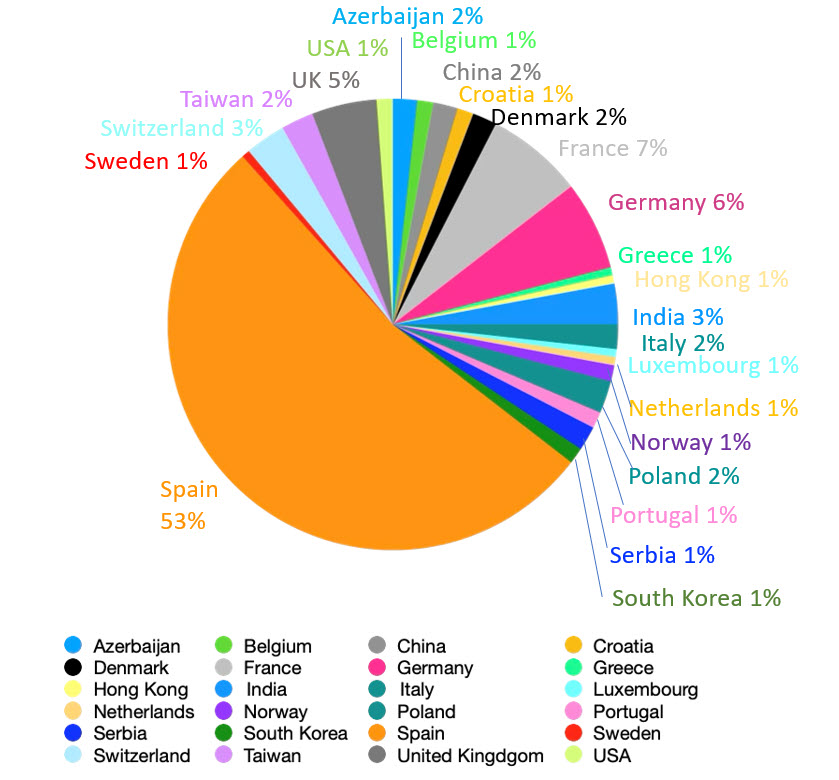
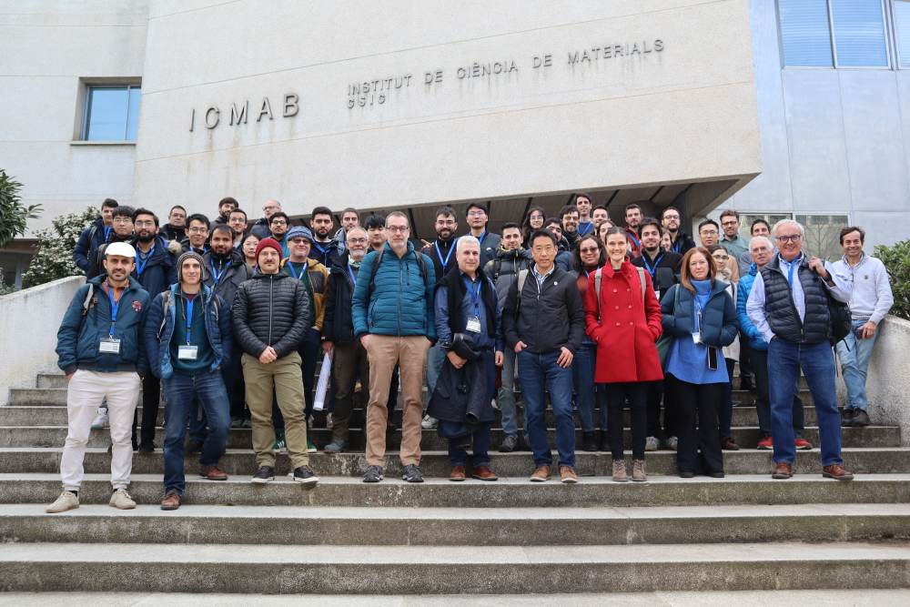

ICMAB Schools on Frontiers in Materials Science and Condensed Matter
2D materials: oxide membranes, twistronics and beyond
16 and 17 January 2025 at ICMAB-CSIC
The ICMAB Schools on Frontiers in Materials Science and Condensed Matter 2025 concluded

The School was held on 16-17 Jan 2025 and had a participation of 170 attendants, among them 75 in-person and 95 online.
The school included a seminar on “Remote moiré interactions in twisted oxide ferroelectric membranes" by Jacobo Santamaria on 15th Jan. It was followed by morning lectures on 16th and 17th January by Harold Y Hwang, Nini Pryds and Leni Bascones and dynamic poster sessions in the afternoon. This sparked engaging discussions and suggestions of exciting perspectives.

Welcome to 2D MATERIALS 2025, a school on new frontiers in “2D materials: oxide membranes, twistronics and beyond” organized within the ICMAB Series of Schools on topics that are at the forefront of solid state physics and condensed matter.
This is the 4th Edition of "ICMAB Schools on Frontiers in Materials Science and Condensed Matter".
Recent developments in materials growth and characterization have given rise to a new class of freestanding materials comprising nanomembranes, 2D layers and topological structures of strongly correlated systems with unique mechanical, chemical and physical properties. Their selfsupported nature allows for greater flexibility in application as well as ease of heterointegration in various systems ranging from polymers to traditional semiconductors paving the way for new applications and practical innovations.
These breakthroughs have gained attention of the scientific community to overcome challenges in synthesis and stability, better understand the origin of the observed exotic behavior, compare them with traditional 2D materials, and search for new phenomena.
The school on 2D MATERIALS offers a unique opportunity to learn and understand from experts in this field the basics on the materials synthesis and the physics behind the exotic properties that these single crystalline membranes display, providing relevant examples. The school will also cover the novel field of stacking and twisting of correlated oxide membranes, potential scenarios to obtain emerging properties along with exposing challenges and perspectives. Finally, a theoretical overview of twisted 2D materials will be taught.
Previous editions were “Angle Resolved Photoemission Spectroscopy", “Orbital currents in solids" and "Topological Interfaces 2024"
To attend the 2D MATERIALS 2025 Severo Ochoa ICMAB School participants should register as indicated. The school will be hybrid: both in-person and online registrations are open.
In order to promote interaction among the in-person participants, two poster sessions will be held at ICMAB during the school. Due to a space limitation, there will be a selection among all participants that request poster presentation during registration. Priority will be given to early stage researchers and motivation to participate. Notification of poster acceptance will be during the first week of January.
Registration is closed.